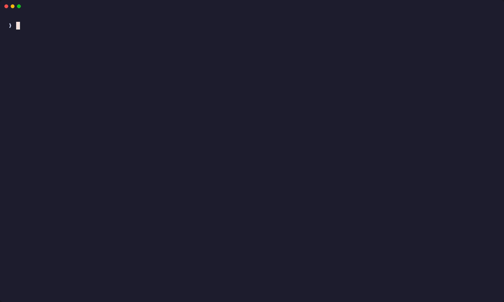

Ten repos, eight people, and nobody whose job it is to write the docs. orgami maps every repository in your GitHub organization — what each one is, how to run it, what it talks to, where it deploys — digests what the team shipped today and this week, keeps the things you only learn once, and hands all of it to your coding agent at session start.

vhs docs/demo.tape —
every line in it came out of a committed file.The size of team where everyone touches everything: no architect holding the diagram, no wiki that survived the last three months, and a new hire or a coding agent expected to be useful on day one.
Every edge carries the file:line it came from, so nothing in it is a
model's guess. A missing edge means “not found in committed configuration”, never
“not connected”.
jq computes every figure; Claude only writes the prose, and is told the
numbers rather than asked to count.
The cause someone found at 2am gets written down once — often without anyone typing it — and everyone's agent reads it.
Open Claude Code or Cursor in a mapped checkout and the repo's stack, commands, linked repos and notes are already in the session.
One command. It installs what is missing, puts orgami on your PATH, and
wires up Claude Code and Cursor if they are on the machine.
curl -fsSL https://raw.githubusercontent.com/achevalier-dev/orgami/main/bootstrap.sh | bashWindows, in PowerShell:
irm https://raw.githubusercontent.com/achevalier-dev/orgami/main/bootstrap.ps1 | iexThen, once, on one machine:
gh auth login
orgami init # map your organizationEveryone else on the team runs orgami join and picks it up — no scan, no
clones. --dry-run prints every step without touching anything;
installing by
hand is documented too.
orgami scan shallow-clones every non-archived, non-fork repo in the
organization and pattern-matches what is committed — deploy tooling, servers, backing
services, repo-to-repo references, frameworks, run and test commands, routes, shared
environment contracts. The result is map/graph.json; the architecture
document, the mermaid diagrams and the terminal view all render from it.
orgami view # the map, the repos, the notes and the recaps, in one screen
orgami query thruster # one node and its edges, as textBeside it sit the organization's gathered conventions, decisions mined from merged pull requests, runbooks per repo, and which repos keep changing together.
A day is not a week in miniature: most of a day's work has not merged yet. So
orgami daily reads what merged, what opened, what is sitting open with nobody
on it, and commits that never became a pull request at all — the half a merge-based recap
cannot see. A quiet day produces no file.
orgami daily --stats-only # the numbers, no model call, no cost
orgami report # the week, written from the same statisticsA model asked to both count and narrate will do neither reliably, and a digest nobody trusts the numbers in is not worth writing.
Two Claude calls a week — the recap and the decision mining — plus one short one per
weekday morning if the daily digest is on. Everything else is gh,
git, jq and grep, and every
--stats-only run costs nothing at all. No daemon, no database, no web app:
Bash, a timer, and plain files that diff cleanly in git.